CYLINDER HEAD > REPLACEMENT |
| 1. REPLACE VALVE STEM OIL SEAL |
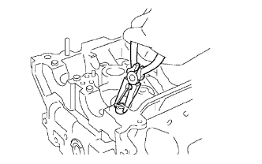 |
Using needle-nose pliers, remove the valve stem oil seal.
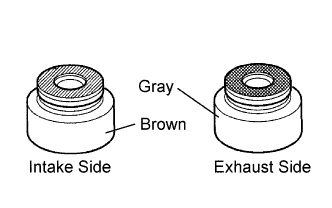 |
Apply a light coat of engine oil to the valve stem oil seal.
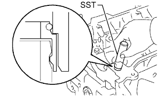 |
Using SST and a hammer, push in a new valve stem oil seal.
| 2. REPLACE VALVE GUIDE BUSH |
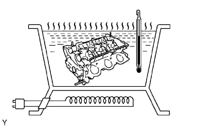 |
Gradually heat the cylinder head to 80 to 90°C (176 to 212°F).
Place the cylinder head on wooden blocks.
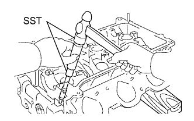 |
Using SST and hummer, tap out the valve guide bush.
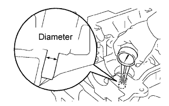 |
Using a caliper gauge, measure the bush bore diameter of the cylinder head.
| Item | Specified Condition |
| STD | 10.333 to 10.344 mm (0.4068 to 0.4072 in.) |
| O/S 0.05 | 10.383 to 10.394 mm (0.4088 to 0.4092 in.) |
Gradually heat the cylinder head to 80 to 100°C (176 to 212°F).
Place the cylinder head on wooden blocks.
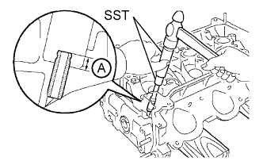 |
Using SST, tap in a new valve guide bush to the standard protrusion height labeled A shown in the illustration.
Using a sharp 5.5 mm reamer, ream the valve guide bush to obtain the standard specified clearance between the valve guide bush and valve stem.
| Item | Specified Condition |
| Intake | 0.025 to 0.060 mm (0.00984 to 0.00236 in.) |
| Exhaust | 0.030 to 0.065 mm (0.00118 to 0.00256 in.) |
| 3. REPLACE UNION |
Remove the union from the bank 1 cylinder head (front side) and bank 2 cylinder head (intake port side).
Apply adhesive to 2 or 3 threads of the bolt ends of new unions.
Using a 12 mm deep socket wrench, install the 2 unions.
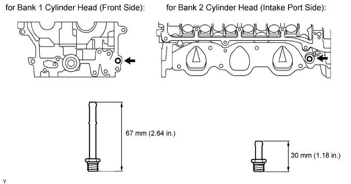
| 4. REPLACE TIGHT PLUG |
Remove the tight plugs.
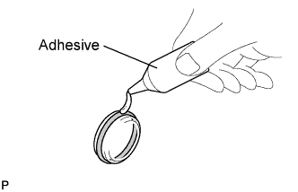 |
Apply adhesive around new tight plugs.
Using SST and a hammer, tap in the tight plugs to the standard depth.
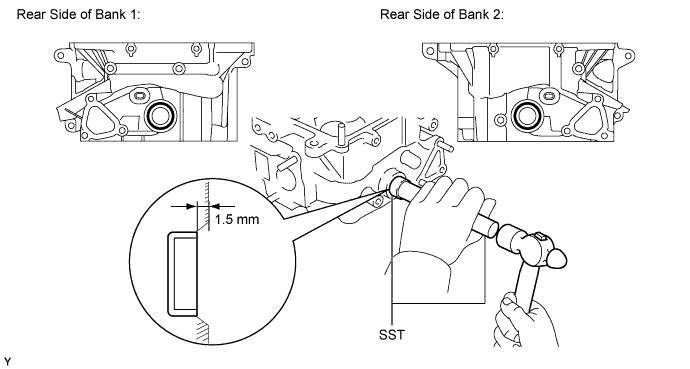
| 5. REPLACE HEAD STRAIGHT SCREW PLUG |
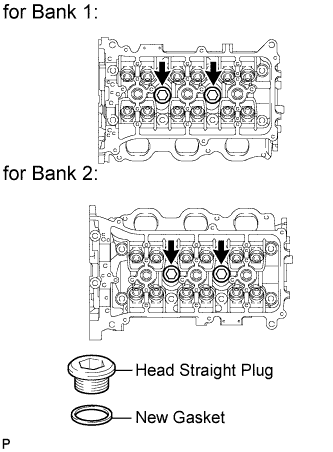 |
Using a 14 mm hexagon wrench, remove the straight screw plug and gasket.
Using a 14 mm hexagon wrench, install a new gasket and straight screw plug.
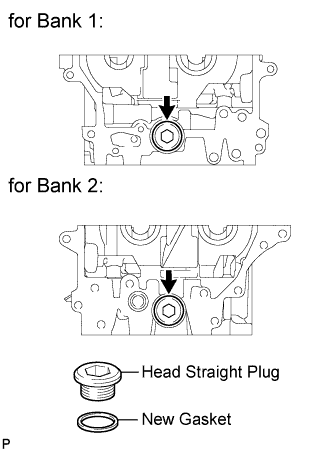 |
Using a 14 mm hexagon wrench, remove the straight screw plug and gasket.
Using a 14 mm hexagon wrench, install a new gasket and straight screw plug.
| 6. REPLACE RING PIN |
Remove the ring pins.
Using a plastic-faced hammer, tap in new ring pins until they reach the standard protrusion height labeled A shown in the illustration.
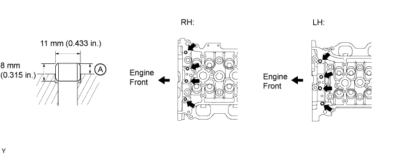
| 7. REPLACE STRAIGHT PIN |
Remove the straight pins.
Using a plastic-faced hammer, tap in new straight pins until they reach the standard protrusion height labeled A shown in the illustration below.
| Item | Specified Condition |
| Pin "A" | 17.5 to 19.5 mm (0.689 to 0.768 in.) |
| Pin "B" | 7.5 to 8.5 mm (0.295 to 0.335 in.) |
| Pin "C" | 7.0 to 9.0 mm (0.276 to 0.354 in.) |
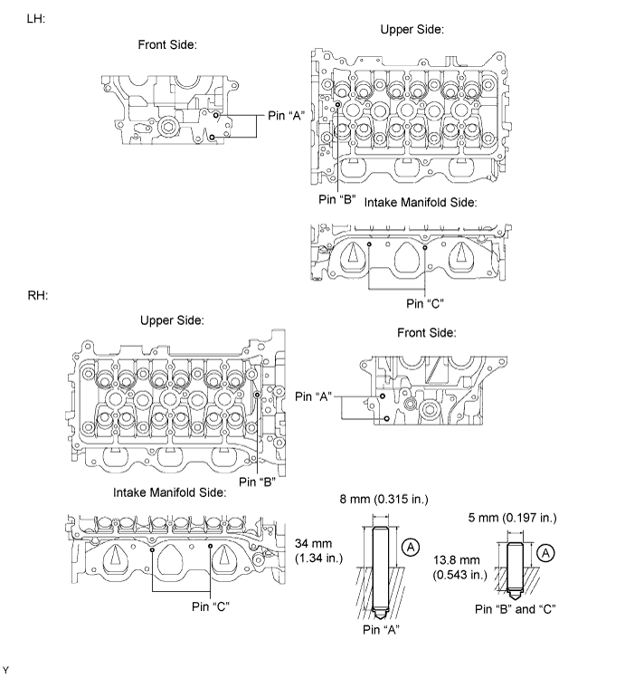
| 8. REPLACE STUD BOLT |
Using an E5 and E7 "TORX" socket wrench, remove the stud bolts.
Using an E5 and E7 "TORX" socket wrench, install new stud bolts.
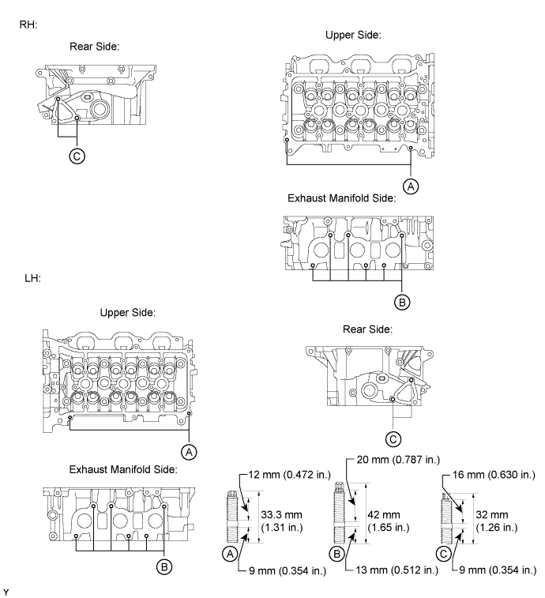